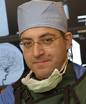

PHYSICIANS & STAFF |
|||||||||||||||||||||||||||||||||
| Gary L. Bernardini,
MD, PhD joined Albany Medical Center in January 2000 as the
Director of Stroke and Neurocritical Care. His areas of specialty include
neurointensive care management of subarachnoid and intracerebral hemorrhage
patients and comprehensive care of ischemic stroke patients including
treatment with thrombolytic therapy and secondary prevention therapies.
Dr. Bernardini is an Associate Professor in Neurology and Neurosurgery
at Albany Medical Center and is a Principal Investigator in multiple
clinical trials. He is Co-chair of the American Stroke Association's
Capital Region Stroke Taskforce. He was awarded the Edith M. Hellman
Endowed Chair in Cerebrovascular Disease. |
|||||||||||||||||||||||||||||||||
Clinical Background:
|
|||||||||||||||||||||||||||||||||
|  | Alan S.
Boulos, MD joined Albany Medical Center in August 2002 as
the first Director of the Neuroendovascular Division of the Neurosciences
Institute. His areas of specialty include cerebrovascular, and skull
based neurosurgery as well as diagnostic and interventional neurovascular
procedures including coiling embolization of cerebral aneurysms, stenting
of carotid and cerebral arteries, and intra-arterial treatment of acute
ischemic stroke. Dr. Boulos is an Assistant Professor of Neurosurgery
and Radiology and lectures internationally on the topics of aneurysms,
arteriovenous malformations and carotid stenosis. He was awarded the
Herman and Sunny Stahl Chair in Endovascular Surgery in 2004. |
||||||||||||||||||||||||||||
Clinical Background:
|
|||||||||||||||||||||||||||||
| Dileep
R. Yavagal, MD
joined Albany Medical Center in July, 2004 as the
Co-Director of the Neuroendovascular Division of the Neurosciences
Institute. His areas of specialty include diagnostic and interventional
neuroendovascular procedures including intra-arterial t-PA and mechanical
clot retrieval with the MERCI device for acute ischemic stroke, brain
aneurysm embolization, AVM embolization, carotid stenting and intracranial
stenting. Dr Yavagal is an Assistant Professor in Neurology and Neurosurgery at Albany Medical Center and
Attending Staff Neurologist at Stratton VA Medical Center. He
is the Principal Investigator at Albany Medical Center for the NIH
sponsored acute stroke clinical trial: MR Rescue. |
|||||||||||||||||||||||||||||||||||||
Clinical Background:
|
|||||||||||||||||||||||||||||||||||||
|
|||||||||||||||||||||||||||||||||||||